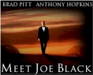
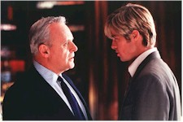

Contents | Features | Reviews | News | Archives | Store |
 |
|
| Movie Credits | Buy It! |
Meet Joe Black
Review by Elias Savada
Posted 13 November 1998
|  | Directed by Martin Brest. Starring
Brad Pitt, Anthony Hopkins, Written by Ron Osborn & Jeff Reno |
Brestian (adj.) Bloated, boring, and long-winded, as in "Meet Joe Black is Brestian in scope and to be avoided if you have a weak bladder." Intended for the hopelessly (make that Hopelessly) romantic, this nearly three hour allegorical vacation is pretty much death warmed over and over and over. Draw out with huge gaps between sentences, words, and, seemingly, vowels and consonants, viewers will ache to kick Hollywood butt to speed up the dialogue. Meet Joe B l e e c h! Producer/Director Martin Brest has unleashed other lengthy (and better) efforts such as Midnight Run (122 minutes) and Scent of a Woman (157), but I can’t understand why he blatantly stretched this film past it’s breaking point by at least 60 minutes (some might even say 180 minutes), unless he felt it was necessary to narcissistically show off more of this $90 million production than anyone else cared to watch.
The story, about death embodied in the body of a mortal man, is a (very) loose remake of 1934’s Death Takes A Holiday, a better (and shorter!) picture, thanks to the deft direction of Mitchell Leisen, who understood the words "pacing" and "budget" much better than Brest. The average Joe (heartthrob Brad Pitt) is clueless about how to deport himself as a human. And what gives with making his favorite food peanut butter? Pitt’s character is sketched as a dead fish out of water and is more stiff rather than comical. Which makes sense, as the man the grim reaper is externalizing was rammed by several cars earlier that morning (in one of the film’s more horrendously gruesome moments). You’d be stiff too if you had that kind of day.
Bazillionaire Parrish (Anthony Hopkins), on the verge of his 65th birthday, gets an unwelcomed gift when death drops in for a vacation. On a whim (Death has whims? For the first time in eternity?), Death moves into the Parrish home as best bud to the chairman of the board of the family’s media empire, in exchange for a few more days among the living. The oddly drawn character jumps right into the thick of a corporate takeover battle at the New York City headquarters, fending off Drew, an aggressive heir to the empire and possible loveless son-in-law via Dr. Susan Parrish (Clair Forlani), a resident in internal medicine with a voice like Mia Farrow. She’s a novice in love who ultimately gets screwed by Death (Likely sequel: Joe Black, Jr.), but she’s still dad’s preferred over sibling Allison (Marcia Gay Harden), whose deeply involved with daddy’s overwrought birthday bash that covers the film’s last 45 minutes. Jeffrey Tambor as Quince, Allison’s weak minded but well intentioned husband, does a riff on his Emmy Award nominated character Hank Kingsley, Garry Shandling’s sidekick on the late great HBO series The Larry Sanders Show. Tambor and Hopkins come off best in this sinking ship.
There is a vestige of a decent movie under the hefty bulk, but it demands a butcher’s touch to get there. Chop, chop, snip, snip. Too many scriptwriters (four get credit; others, the lucky ones, don’t) wreck any iota of sense in the characters, and Brest’s directorial pace suggests that if he had made Titanic, it would have been a six-hour nap. Instead his Joe is the ultimate cure for insomnia.
The only thing going -- at all -- for this fat slab of bloat are the production values. Emmanuel Lubezki’s cinematography is bright and straight on, although I much prefer his work on The Little Princess and A Walk in the Clouds. Joe is closer in pictorial tone to his camerawork on The Birdcage. Production design by Dante Ferretti (who worked on The Shawkshank Redemption, one of my favorite films) makes media magnate William Parrish’s Poughkeepsie estate look excessively palatial and is used to pretty effect during a fireworks display at film’s end. It’s good placement, though, to wake up those dozing in the crowd.
It’s the ’90s version of Heaven’s Gate, that over-budget, over-long 1980 release that was the last time it’s director Michael Cimino ever got final cut (and five years before he landed work in Hollywood again). Perhaps as punishment for the Universal Pictures executives who green-lighted Joe and allowed Brest to over-extend his picture, they’ll chain them to the studio screening room seats and force them to watch that earlier 219-minute self- indulgent fiasco a few times over. Unless, by some marketing miracle, star
Brad Pitt has some mystically drawing power and brings in the masses. My teenage daughter, despite my warnings, is off with her buddies to catch this film (and I Still Know What You Did Last Summer) at the local multiplex this weekend, so I suspect this actually might have a decent opening weekend, probably at the expense of larger inner city houses in older neighborhoods, unless they’re pulled in by Anthony Hopkins. My words to you: Send Joe back.
Contents | Features | Reviews | News | Archives | Store
Copyright © 1999 by Nitrate Productions, Inc. All Rights Reserved.